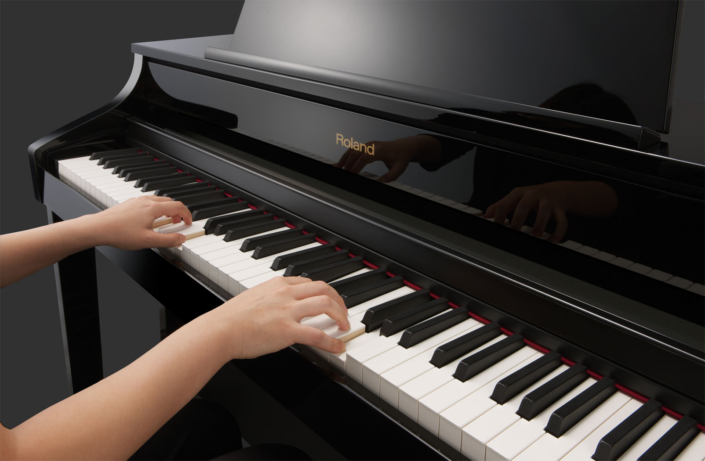

I'm passionate about trying new things, which include coding and playing piano. I've been playing piano for about a year and a half (~16 months). I can't sight read music that well, but I can read it and practice hard... I really like jazzy songs. Some songs I like include are Yiruma's Indigo and BOA's song Disturbance

I've basically been drawing since I could hold a pencil! I started drawing cartoons and animes particularly Sailor Moon, Digimon, and Tinkerbell. I've never really gotten out of drawing anime; I just draw more realistically these days and experiment with charcoal and pastels. If you want to see my art work go here